La regresión lineal simple es una técnica estadística que permite estudiar y cuantificar la relación lineal entre dos variables cuantitativas. Se utiliza para explicar el comportamiento promedio de una variable de interés a partir de otra y, bajo condiciones apropiadas, realizar predicciones.
En la Administración Pública puede emplearse, por ejemplo, para analizar la relación entre las horas de capacitación de los servidores públicos y el número de trámites atendidos; entre la inversión en mantenimiento vial y el tiempo promedio de desplazamiento; o entre el gasto en programas sociales y determinados indicadores de cobertura.
La regresión identifica asociaciones condicionadas por el modelo y los datos disponibles. Por sí sola, no demuestra que una variable cause cambios en otra. Para formular conclusiones causales se requiere un diseño de investigación y supuestos adicionales que permitan descartar explicaciones alternativas.
2.1 .Objetivos de aprendizaje
Al finalizar el estudio, el estudiante estará en capacidad de:
Definir la regresión lineal simple y reconocer sus componentes.
Diferenciar el modelo poblacional del modelo estimado.
Estimar e interpretar los coeficientes mediante mínimos cuadrados ordinarios.
Interpretar el coeficiente de determinación y las pruebas de significancia.
Identificar y evaluar los supuestos del modelo y de sus errores.
Examinar los residuos mediante métodos gráficos y pruebas estadísticas.
Reconocer observaciones atípicas e influyentes.
Comunicar resultados en el contexto de la gestión pública utilizando R.
3 .Conceptos fundamentales
Variable dependiente e independiente
En la regresión lineal simple se estudia la relación entre dos variables cuantitativas:
Variable dependiente (Y): variable cuyo comportamiento se desea explicar o predecir. También se denomina respuesta.
Variable independiente (X): variable utilizada como explicativa o predictora.
Ejemplo en Administración Pública:
Variable
Descripción
Función
Horas de capacitación por funcionario
Promedio de horas de formación recibidas
Independiente (X)
Trámites mensuales por funcionario
Promedio de trámites gestionados
Dependiente (Y)
La elección de las variables debe responder a una pregunta de investigación y a una justificación conceptual. No basta con que dos variables estén correlacionadas para afirmar que una explica causalmente a la otra.
Modelo de regresión lineal simple
El modelo poblacional se expresa como:
Y_i = \beta_0 + \beta_1 X_i + \varepsilon_i
Donde:
Y_i: valor de la variable dependiente para la observación i.
X_i: valor de la variable independiente para la observación i.
\beta_0: intercepto poblacional.
\beta_1: pendiente poblacional.
\varepsilon_i: término de error aleatorio, que recoge factores no incluidos en el modelo.
i: identifica cada unidad de análisis, desde 1 hasta n.
El término de error representa la diferencia entre el valor observado y la parte sistemática del modelo. Puede recoger variables omitidas, errores de medición, factores aleatorios y otras fuentes de variación.
Modelo estimado
Como generalmente no se dispone de toda la población, los parámetros se estiman a partir de una muestra. La ecuación estimada es:
\hat{Y}_i = b_0 + b_1 X_i
Donde b_0 y b_1 son estimaciones muestrales de los parámetros poblacionales.
El valor estimado o predicho para una observación es \hat{Y}_i. El residuo es:
e_i = Y_i - \hat{Y}_i
Es importante distinguir el error poblacional \varepsilon_i, que no se observa directamente, del residuoe_i, que se calcula después de estimar el modelo.
4 .Interpretación de los parámetros
Intercepto (\beta_0)
Representa el valor esperado de Y cuando X=0:
E(Y\mid X=0)=\beta_0
En el ejemplo, el intercepto representa el número promedio estimado de trámites mensuales por funcionario cuando las horas de capacitación son cero.
Su interpretación debe hacerse con precaución. Si X=0 no es un valor observado o razonable en el contexto, el intercepto puede no tener una interpretación práctica relevante.
Pendiente (\beta_1)
Representa el cambio promedio esperado en Y ante un incremento de una unidad en X:
\beta_1 = \frac{\partial E(Y\mid X)}{\partial X}
Si \beta_1>0, la relación estimada es positiva.
Si \beta_1<0, la relación estimada es negativa.
Si \beta_1=0, el modelo no presenta una pendiente lineal poblacional distinta de cero.
En el ejemplo, una pendiente de 2,8 indicaría que una hora adicional de capacitación se asocia con un aumento promedio estimado de 2,8 trámites mensuales por funcionario, dentro del rango de horas estudiado.
La pendiente describe una asociación lineal promedio. No debe interpretarse automáticamente como efecto causal.
5 .Estimación por mínimos cuadrados ordinarios (MCO)
El método de mínimos cuadrados ordinarios selecciona los coeficientes que minimizan la suma de los cuadrados de los residuos:
La recta estimada pasa por el punto (\bar X,\bar Y). Si existe variación en X, las estimaciones MCO son únicas.
Ejemplo de aplicación
Una alcaldía desea estudiar si la capacitación de sus funcionarios está asociada con la productividad en la atención de trámites. Se seleccionan 100 municipios y se registra el promedio de horas de capacitación por funcionario y el promedio de trámites mensuales gestionados por funcionario.
Supóngase que la estimación produce:
\widehat{Trámites}=35,24+2,83(Capacitación)
Interpretación:
El intercepto estimado es 35,24 trámites cuando la capacitación es cero; debe valorarse si ese punto tiene sentido dentro del contexto.
La pendiente estimada es 2,83. Por cada hora adicional de capacitación, el número promedio estimado de trámites mensuales aumenta en 2,83.
La interpretación es válida como descripción del patrón lineal dentro del rango de los datos, no como garantía de un efecto causal.
Descomposición de la variabilidad y bondad de ajuste
La variabilidad total de Y puede descomponerse en variación explicada por el modelo y variación residual:
SCT = SCE_{modelo} + SCR
Con la notación habitual:
SCT=\sum_{i=1}^{n}(Y_i-\bar Y)^2
SC_{Reg}=\sum_{i=1}^{n}(\hat Y_i-\bar Y)^2
SC_{Res}=\sum_{i=1}^{n}(Y_i-\hat Y_i)^2
Por tanto:
SCT=SC_{Reg}+SC_{Res}
Coeficiente de determinación (R^2)
El coeficiente de determinación mide la proporción de la variabilidad muestral de Y que queda explicada por la recta de regresión:
R^2=\frac{SC_{Reg}}{SCT}
=1-\frac{SC_{Res}}{SCT}
En regresión lineal simple con intercepto, R^2 coincide con el cuadrado de la correlación de Pearson entre X y Y.
Su valor se encuentra entre 0 y 1 en el caso usual con intercepto:
Un R^2 cercano a 0 indica que la recta explica una proporción pequeña de la variabilidad muestral de Y.
Un R^2 cercano a 1 indica que la recta explica una proporción alta de esa variabilidad.
Un R^2 elevado no demuestra que el modelo sea correcto, que los supuestos se cumplan o que exista causalidad. Tampoco un R^2 bajo implica necesariamente que la variable explicativa carezca de importancia.
6 .Pruebas de significancia estadística
Las pruebas de hipótesis permiten evaluar si la relación lineal estimada es compatible con una pendiente poblacional igual a cero.
Prueba t para la pendiente
Las hipótesis son:
H_0:\beta_1=0
H_1:\beta_1\ne 0
El estadístico de prueba es:
t=\frac{b_1-0}{SE(b_1)}
En el modelo simple, los grados de libertad son n-2. El error estándar de la pendiente depende de la variabilidad residual y de la dispersión de X:
SE(b_1)=\sqrt{\frac{MSE}{\sum(X_i-\bar X)^2}}
Donde:
MSE=\frac{SC_{Res}}{n-2}
Con un nivel de significancia \alpha=0,05:
Si el valor p es menor que 0,05, se rechaza H_0.
Si el valor p es igual o mayor que 0,05, no se rechaza H_0.
No rechazar la hipótesis nula no equivale a demostrar que la pendiente sea exactamente cero.
Prueba F para el modelo
En regresión lineal simple, la prueba F global contrasta:
H_0:\beta_1=0
\qquad
H_1:\beta_1\ne 0
El estadístico es:
F=\frac{MS_{Reg}}{MSE}
En este modelo, la prueba F global y la prueba t bilateral de la pendiente conducen a la misma conclusión, y se cumple F=t^2.
Intervalo de confianza para la pendiente
Un intervalo de confianza de nivel 100(1-\alpha)\% para la pendiente es:
b_1 \pm t_{1-\alpha/2,n-2}SE(b_1)
Si el intervalo no contiene el cero, la pendiente es estadísticamente significativa en la prueba bilateral correspondiente.
La significancia estadística debe interpretarse junto con la magnitud del coeficiente, su intervalo de confianza y su importancia práctica para la gestión pública.
7 .Supuestos del modelo de regresión lineal
Los supuestos permiten establecer las condiciones bajo las cuales las estimaciones, los errores estándar, las pruebas y los intervalos de confianza tienen las propiedades esperadas. Es importante distinguir los supuestos necesarios para la insesgadez de MCO de los que permiten realizar inferencia exacta en muestras pequeñas.
Linealidad en los parámetros y forma funcional adecuada
El modelo supone que la media condicional de Y puede representarse mediante una función lineal de X:
E(Y_i\mid X_i)=\beta_0+\beta_1X_i
Esto no significa que todas las relaciones del mundo real deban ser lineales. Significa que la forma lineal debe ser una aproximación razonable para el rango estudiado.
Ejemplo público: si se estudia la relación entre inversión en mantenimiento vial y reducción del tiempo de desplazamiento, debe analizarse si el cambio promedio en el tiempo es aproximadamente constante por unidad de inversión. Puede existir una relación no lineal o un punto de saturación.
Cómo evaluarlo:
Diagrama de dispersión de X frente a Y con recta ajustada.
Gráfico de residuos frente a valores ajustados.
Gráfico de residuos frente a X.
Métodos de diagnóstico de especificación, utilizados como evidencia complementaria.
Un patrón curvo en los residuos puede indicar que la forma lineal es inadecuada. En ese caso, se puede estudiar una transformación o un modelo con términos no lineales, siempre con justificación sustantiva.
Media condicional del error igual a cero y exogeneidad
El supuesto central para que MCO estime correctamente la relación condicional es:
E(\varepsilon_i\mid X_i)=0
Significa que, para cada valor de X, el promedio de los factores no observados incluidos en el error es cero. En términos intuitivos, los factores omitidos no deben estar sistemáticamente relacionados con X de una manera que distorsione la pendiente.
Ejemplo público: al analizar capacitación y productividad, la motivación, la experiencia, la disponibilidad de equipos y la complejidad de los trámites podrían influir en la productividad. Si estos factores también están relacionados con las horas de capacitación y no se consideran adecuadamente, la asociación estimada puede estar sesgada.
Este supuesto no se comprueba con una prueba simple aplicada a los residuos. Requiere conocimiento del contexto, buen diseño de investigación, selección razonada de variables y, cuando se busca causalidad, estrategias de identificación apropiadas.
Independencia de los errores
En observaciones distintas, los errores no deben presentar dependencia sistemática. Una expresión habitual es:
Este supuesto puede ser problemático cuando los datos tienen una estructura temporal, espacial o de agrupación.
Ejemplo público: los datos mensuales de una misma alcaldía pueden presentar dependencia temporal. Asimismo, los funcionarios de una misma entidad pueden compartir condiciones institucionales y, por tanto, sus resultados no ser independientes.
Cómo evaluarlo:
Revisar el diseño de muestreo y el orden temporal o espacial de las observaciones.
Graficar residuos según el tiempo o el orden de recolección cuando ese orden tenga significado.
Utilizar la estadística de Durbin-Watson como diagnóstico de autocorrelación de primer orden en contextos apropiados.
Su valor suele estar entre 0 y 4. Un valor cercano a 2 es compatible con ausencia de autocorrelación de primer orden; valores menores pueden sugerir autocorrelación positiva y valores mayores, negativa. Su interpretación depende de la estructura y el orden de los datos. No es una prueba general de independencia para cualquier muestra transversal.
Si hay dependencia por municipio, entidad, periodo o región, puede ser necesario utilizar errores estándar robustos o agrupados, modelos multinivel o modelos específicos para datos temporales o espaciales.
Homocedasticidad
El supuesto de homocedasticidad establece que la varianza condicional del error es constante para todos los valores de X:
Var(\varepsilon_i\mid X_i)=\sigma^2
Esto significa que la dispersión de los errores alrededor de la recta de regresión se mantiene aproximadamente constante.
Ejemplo público: al estudiar el gasto de los municipios y la cobertura de un programa, podría ocurrir que los municipios grandes presenten una variabilidad mucho mayor que los pequeños. Esa situación puede producir heterocedasticidad.
Cómo evaluarla:
Gráfico de residuos frente a valores ajustados.
Gráfico de residuos frente a la variable explicativa.
Prueba de Breusch-Pagan.
Prueba de White, cuando sea pertinente.
En el gráfico de residuos, una dispersión aproximadamente uniforme alrededor de cero es compatible con homocedasticidad. Una forma de embudo o una variación sistemática de la amplitud puede sugerir heterocedasticidad.
Prueba de Breusch-Pagan
Hipótesis:
H_0:\text{varianza constante}
H_1:\text{la varianza depende de una o más variables}
Criterio orientativo con \alpha=0,05:
p>0,05: no se rechaza la hipótesis de homocedasticidad.
p\leq0,05: se rechaza la hipótesis de homocedasticidad; hay evidencia de heterocedasticidad.
La prueba puede tener poca potencia en muestras pequeñas o ante ciertas formas de heterocedasticidad. Por eso debe complementarse con gráficos.
La heterocedasticidad no necesariamente sesga los coeficientes MCO bajo exogeneidad, pero hace que los errores estándar convencionales puedan ser incorrectos. Una alternativa frecuente es utilizar errores estándar robustos a heterocedasticidad.
Normalidad de los errores
Para la inferencia exacta en muestras pequeñas bajo el modelo clásico se suele asumir:
\varepsilon_i\mid X_i \sim N(0,\sigma^2)
La normalidad se refiere a la distribución condicional de los errores, no a que las variables X o Y deban ser normales.
En la práctica, los errores no se observan directamente. Por ello, se estudia la distribución de los residuos como aproximación diagnóstica.
Cómo evaluarla:
Histograma de los residuos.
Gráfico Q-Q normal.
Prueba de Shapiro-Wilk.
Prueba de Shapiro-Wilk
Hipótesis:
H_0:\text{los errores siguen una distribución normal}
H_1:\text{los errores no siguen una distribución normal}
Criterio orientativo con \alpha=0,05:
p>0,05: no se rechaza la hipótesis de normalidad.
p\leq0,05: se rechaza la hipótesis de normalidad.
No rechazar normalidad no significa demostrar que los errores sean normales. Además, en muestras grandes, pequeñas desviaciones pueden resultar estadísticamente significativas. Por eso es importante observar el gráfico Q-Q y el contexto de los datos.
La normalidad no es necesaria para que MCO sea insesgado bajo exogeneidad. Es especialmente relevante para la distribución exacta de las pruebas t y F en muestras pequeñas. En muestras grandes, la inferencia puede apoyarse en aproximaciones asintóticas, siempre que se cumplan las condiciones pertinentes.
Variabilidad de la variable independiente
La variable X debe presentar variación en la muestra:
\sum_{i=1}^{n}(X_i-\bar X)^2>0
Si todos los valores de X son iguales, no es posible estimar una pendiente. Además, una variación muy pequeña de X puede producir estimaciones imprecisas.
Ausencia de observaciones excesivamente influyentes
Una observación atípica puede tener un residuo grande, pero no necesariamente influir mucho en la pendiente. Una observación influyente es aquella que puede modificar considerablemente los coeficientes estimados al incluirla o excluirla.
Se recomienda examinar:
Residuos estudentizados.
Valores de apalancamiento (leverage).
Distancia de Cook.
La distancia de Cook resume cuánto cambiarían los valores ajustados al retirar una observación. Valores relativamente altos deben investigarse, pero ningún umbral aislado justifica eliminar un dato automáticamente.
8 .Resumen de los supuestos y diagnósticos
Supuesto o condición
Herramienta de diagnóstico
Qué se busca
Linealidad
Dispersión y residuos vs. ajustados
Ausencia de curvatura sistemática
Exogeneidad
Diseño y conocimiento del contexto
Ausencia de relación sistemática entre X y factores del error
Independencia
Diseño, secuencia temporal y DW cuando aplica
Ausencia de dependencia de los errores
Homocedasticidad
Residuos vs. ajustados y Breusch-Pagan
Dispersión aproximadamente constante
Normalidad
Q-Q, histograma y Shapiro-Wilk
Residuos aproximadamente normales
Variación en X
Estadísticos descriptivos
Valores de X no constantes
Influencia
Leverage y distancia de Cook
Ausencia de observaciones que dominen el ajuste
Advertencia: no existe una única prueba que certifique que un modelo cumple todos los supuestos. El diagnóstico debe combinar gráficos, pruebas, conocimiento del proceso de generación de los datos y revisión de la calidad de la información.
9 .Aplicación práctica en R
A continuación se presenta un ejercicio reproducible con datos simulados en el contexto de la Administración Pública. La simulación se utiliza para ilustrar el procedimiento; no representa datos oficiales ni garantiza que todos los conjuntos de datos reales cumplan los supuestos.
Generación de los datos
Ver código
# Instalar una sola vez si es necesario:# install.packages(c("tidyverse", "lmtest", "car", "broom"))library(tidyverse)library(lmtest)library(car)library(broom)set.seed(123)n <-100datos <-tibble(horas_capacitacion =runif(n, 4, 20),tramites_mensuales =35+2.8* horas_capacitacion +rnorm(n, mean =0, sd =4))glimpse(datos)
horas_capacitacion tramites_mensuales
Min. : 4.010 Min. :42.60
1st Qu.: 7.928 1st Qu.:57.99
Median :11.462 Median :67.52
Mean :11.977 Mean :68.32
3rd Qu.:16.088 3rd Qu.:79.14
Max. :19.908 Max. :97.16
Diagrama de dispersión
Ver código
ggplot(datos,aes(x = horas_capacitacion,y = tramites_mensuales)) +geom_point(color ="#2364AA", size =2.5, alpha =0.75) +geom_smooth(method ="lm", se =TRUE,color ="#D1495B", fill ="#F4A6A6") +labs(title ="Capacitación y productividad administrativa",subtitle ="Relación entre horas de capacitación y trámites mensuales",x ="Horas de capacitación por funcionario",y ="Trámites mensuales por funcionario" ) +theme_minimal()
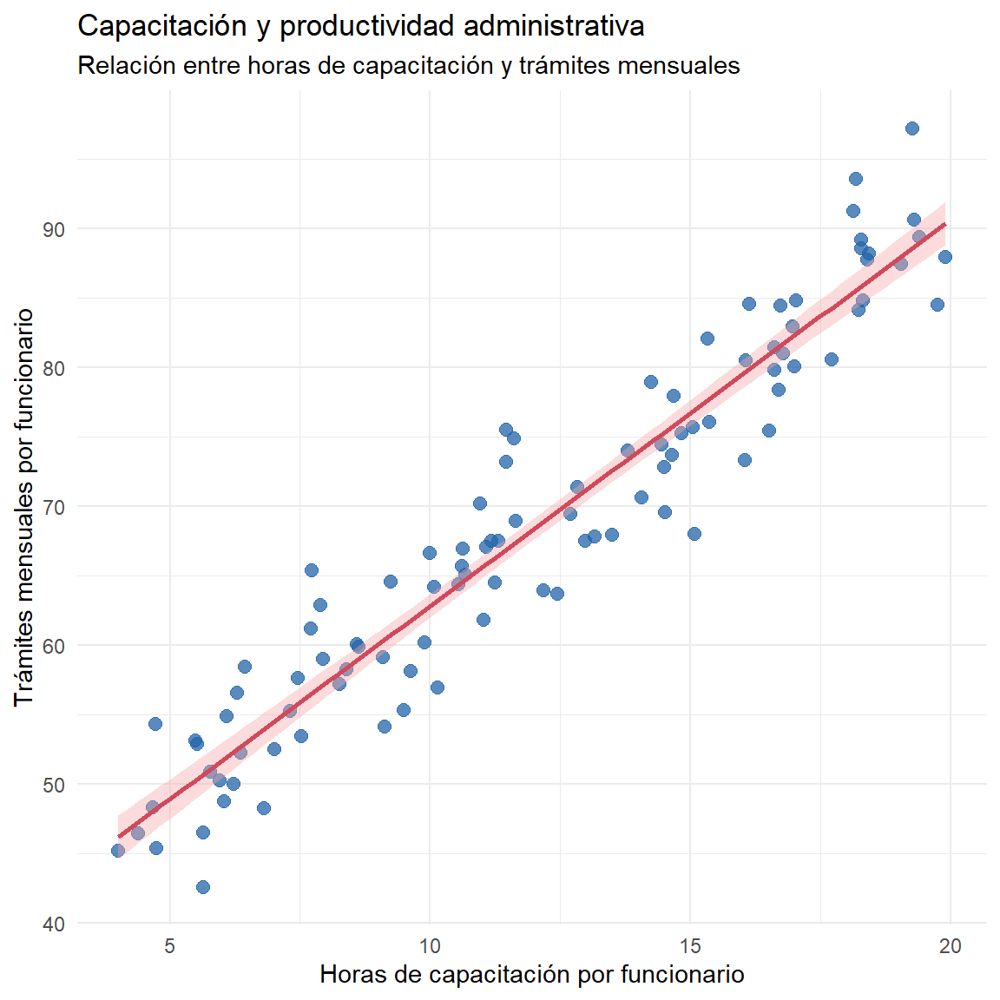
El diagrama permite examinar la dirección, la forma y la intensidad visual de la asociación. La banda representa un intervalo de confianza de la media estimada, no un intervalo de predicción individual.
El intercepto indica el valor estimado de trámites cuando las horas de capacitación son cero. La pendiente representa el cambio promedio estimado en los trámites mensuales por cada hora adicional de capacitación.
Gráficos de diagnóstico
Ver código
# Cuatro gráficos diagnósticos básicos de lm()par(mfrow =c(2, 2))plot(modelo)
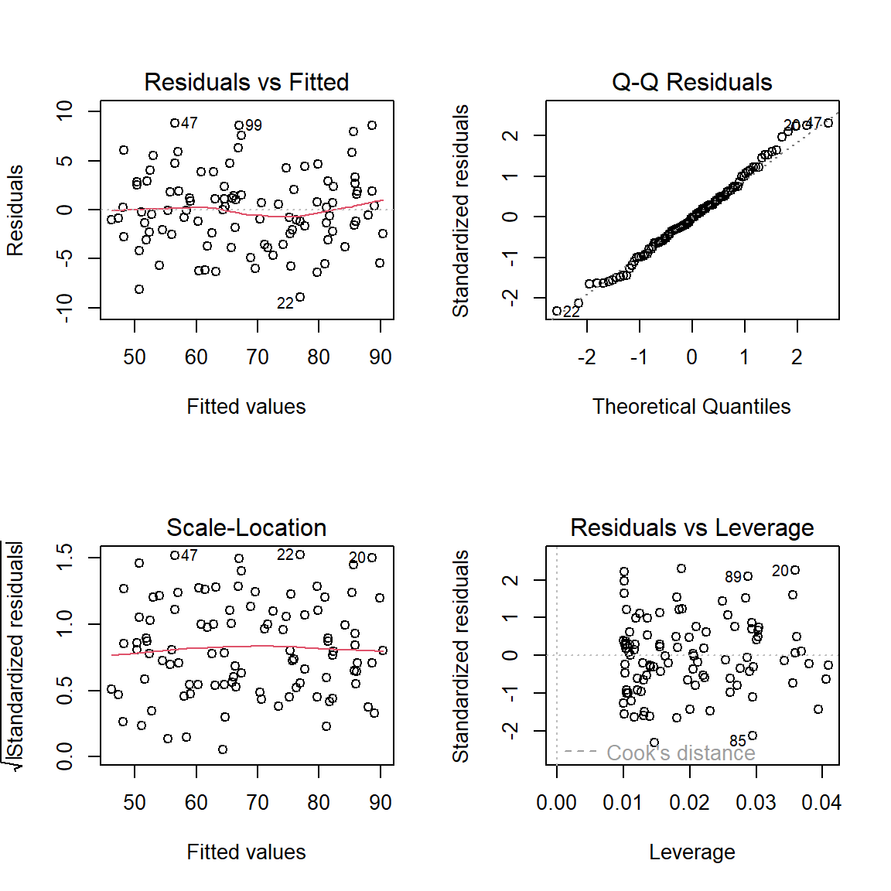
Ver código
par(mfrow =c(1, 1))
Los cuatro gráficos habituales permiten revisar:
Residuos frente a valores ajustados: linealidad y dispersión constante.
Gráfico Q-Q: normalidad aproximada de los residuos.
Escala-localización: homogeneidad de la dispersión.
Residuos frente a leverage: observaciones potencialmente influyentes.
Gráfico de residuos frente a valores ajustados con ggplot2
Ver código
diagnostico <-augment(modelo)ggplot(diagnostico,aes(x = .fitted, y = .resid)) +geom_point(color ="#2364AA", alpha =0.75) +geom_hline(yintercept =0, linetype ="dashed",color ="#D1495B") +geom_smooth(method ="loess", se =FALSE,color ="darkgreen") +labs(title ="Residuos frente a valores ajustados",x ="Valores ajustados",y ="Residuos" ) +theme_minimal()
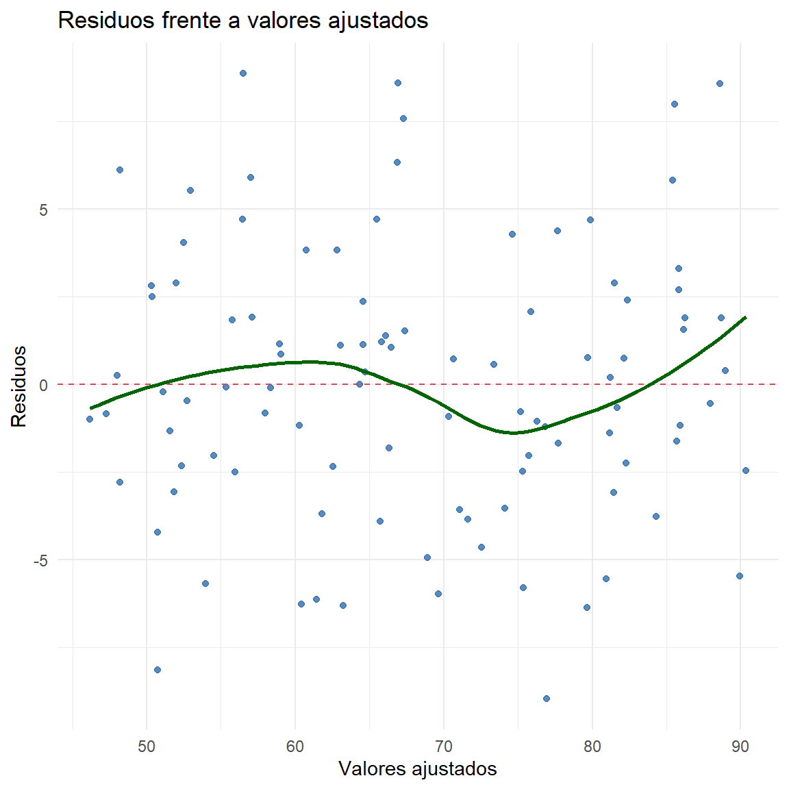
Se espera que los residuos se distribuyan alrededor de cero sin una estructura curva ni una variación sistemática de su dispersión.
Gráfico Q-Q
Ver código
ggplot(diagnostico,aes(sample = .std.resid)) +stat_qq(color ="#2364AA") +stat_qq_line(color ="#D1495B") +labs(title ="Gráfico Q-Q de los residuos estudentizados",x ="Cuantiles teóricos",y ="Cuantiles observados" ) +theme_minimal()
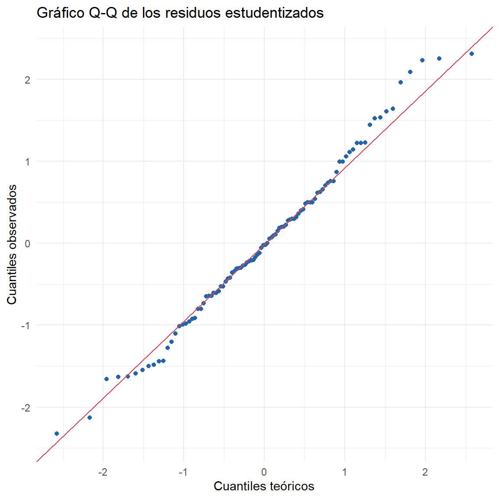
Si los puntos siguen aproximadamente la línea de referencia, el patrón es compatible con normalidad. Desviaciones marcadas, especialmente en las colas, pueden indicar asimetría o colas pesadas.
10 .Pruebas estadísticas de los supuestos en R
Normalidad: Shapiro-Wilk
Ver código
shapiro.test(residuals(modelo))
Shapiro-Wilk normality test
data: residuals(modelo)
W = 0.99018, p-value = 0.6792
Interpretación:
Si p>0,05, no se rechaza la hipótesis de normalidad.
Si p\leq0,05, se rechaza la hipótesis de normalidad.
La prueba debe interpretarse junto con el gráfico Q-Q y el tamaño de muestra.
Homocedasticidad: Breusch-Pagan
Ver código
bptest(modelo)
studentized Breusch-Pagan test
data: modelo
BP = 0.025212, df = 1, p-value = 0.8738
Interpretación:
Si p>0,05, no se encuentra evidencia suficiente de heterocedasticidad.
Si p\leq0,05, existe evidencia de varianza no constante.
Independencia: Durbin-Watson
Ver código
dwtest(modelo)
Durbin-Watson test
data: modelo
DW = 2.0591, p-value = 0.6155
alternative hypothesis: true autocorrelation is greater than 0
Esta prueba es pertinente principalmente cuando las observaciones tienen un orden temporal significativo. En una muestra transversal de municipios, el orden arbitrario de las filas no permite establecer independencia mediante Durbin-Watson. La independencia debe justificarse desde el diseño de muestreo y la estructura de los datos.
Linealidad: componente gráfico y prueba complementaria
Ver código
car::crPlots(modelo)
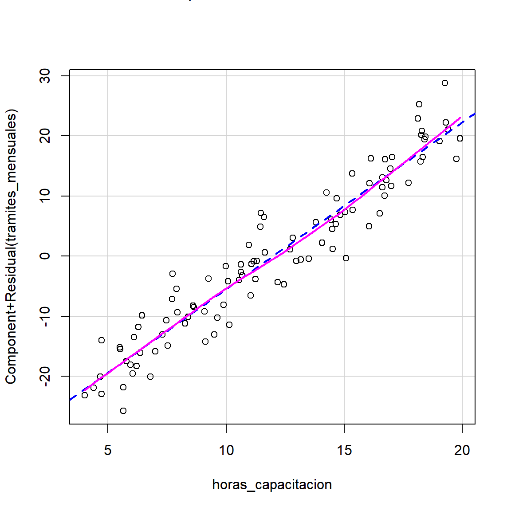
Los gráficos de residuos y los gráficos de componente-residuo pueden ayudar a detectar patrones no lineales. En un modelo con un único predictor, la inspección de la dispersión y de los residuos frente a los ajustados es especialmente importante.
También puede utilizarse una prueba de especificación como Rainbow:
La prueba Rainbow es un diagnóstico complementario de especificación lineal; no debe considerarse una demostración definitiva de linealidad.
Observaciones influyentes
Ver código
# Distancia de Cookcooks <-cooks.distance(modelo)plot(cooks,type ="h",main ="Distancia de Cook",ylab ="Distancia de Cook",xlab ="Observación")abline(h =4/n, col ="red", lty =2)
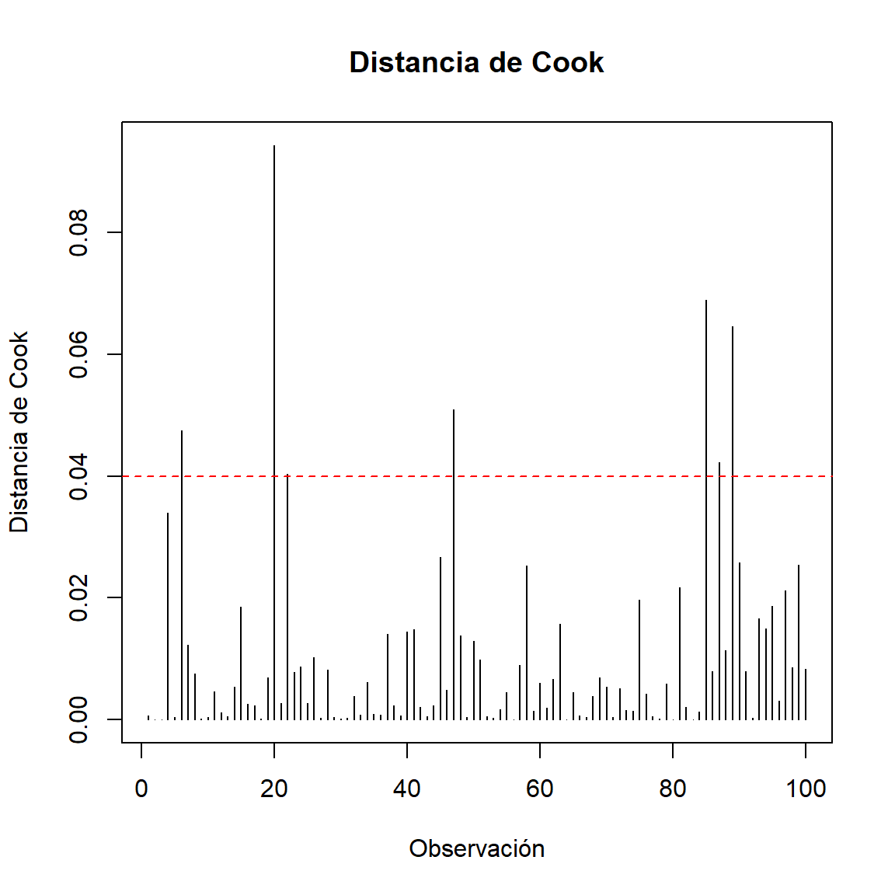
La línea 4/n es una regla orientativa para identificar observaciones que merecen revisión. No es una regla automática para eliminar casos. Se debe comprobar si hay errores de digitación, circunstancias especiales o unidades legítimamente diferentes.
11 .¿Qué hacer cuando no se cumplen los supuestos?**
Problema detectado
Alternativas de análisis
Relación no lineal
Transformaciones justificadas, términos polinómicos o modelos no lineales
Heterocedasticidad
Errores estándar robustos, transformación de la respuesta o modelación de la varianza
Dependencia temporal
Modelos de series de tiempo o errores que consideren autocorrelación
Dependencia por grupos
Errores estándar agrupados o modelos multinivel
Residuos no normales
Revisar atípicos, forma funcional y distribución; considerar métodos robustos o inferencia apropiada
Observaciones influyentes
Verificar datos, analizar sensibilidad y justificar el tratamiento
Variables omitidas relacionadas con X
Mejorar el diseño, incorporar variables relevantes o utilizar estrategias de identificación
La solución depende de la naturaleza del problema. No se recomienda eliminar observaciones, transformar variables o cambiar de modelo únicamente para conseguir valores p superiores a 0,05.
Errores estándar robustos a heterocedasticidad
Si se detecta heterocedasticidad, una alternativa es calcular errores estándar robustos. Por ejemplo:
Ver código
# Instalar si es necesario:# install.packages("sandwich")library(sandwich)library(lmtest)coeftest(modelo,vcov. =vcovHC(modelo, type ="HC1"))
t test of coefficients:
Estimate Std. Error t value Pr(>|t|)
(Intercept) 35.053992 1.068800 32.797 < 2.2e-16 ***
horas_capacitacion 2.777542 0.083854 33.124 < 2.2e-16 ***
---
Signif. codes: 0 '***' 0.001 '**' 0.01 '*' 0.05 '.' 0.1 ' ' 1
Este procedimiento modifica la estimación de la incertidumbre de los coeficientes, pero no corrige una forma funcional incorrecta, variables omitidas ni dependencia entre observaciones.
12 .Predicción e intervalos
Una vez estimado el modelo, se pueden obtener predicciones para valores de X.
Es importante distinguir:
Intervalo de confianza de la media: estima la media condicional de Y para un valor dado de X.
Intervalo de predicción: estima un rango para una observación individual futura; suele ser más amplio porque incorpora tanto la incertidumbre de la media como la variabilidad individual.
Ejemplo:
Ver código
nuevos_municipios <-tibble(horas_capacitacion =c(8, 12, 16))# Intervalos de confianza para la mediapredict(modelo, nuevos_municipios,interval ="confidence",level =0.95)
Las predicciones deben realizarse preferiblemente dentro del rango observado de X. Extrapolar fuera de ese rango puede producir resultados poco confiables.
13 .Ejemplo de redacción de resultados para un informe académico
Una vez obtenidos los resultados reales del análisis, la presentación puede redactarse de la siguiente manera, reemplazando los valores entre corchetes:
Se estimó un modelo de regresión lineal simple para evaluar la relación entre las horas promedio de capacitación por funcionario y el número de trámites mensuales gestionados. El modelo presentó un coeficiente de determinación de R^2=[valor], lo que indica que el porcentaje\]% de la variabilidad muestral de la productividad administrativa queda explicado por la variable capacitación mediante la relación lineal estimada. La pendiente fue de valor] (EE = valor\], p = valor]; IC del 95% límite inferior, límite superior\]), lo que indica que por cada hora adicional de capacitación se estima un cambio promedio de valor] trámites mensuales por funcionario. Los diagnósticos de residuos incluyeron la evaluación gráfica de linealidad, normalidad y dispersión, así como pruebas complementarias de normalidad y heterocedasticidad. Las conclusiones se limitaron a la asociación estimada y no se interpretaron como evidencia causal.
En un artículo científico se deben informar el tamaño de muestra, la ecuación estimada, los coeficientes, sus errores estándar o intervalos de confianza, el R^2, la prueba global y los diagnósticos pertinentes.
14 .Actividad de aprendizaje
Una entidad territorial desea mejorar la productividad de sus funcionarios encargados de la atención al ciudadano. Para ello, recopila información de 100 municipios sobre las horas promedio de capacitación por funcionario y el número promedio de trámites mensuales gestionados por funcionario.
Resuelva:
Identifique la variable dependiente y la independiente.
Formule la pregunta de investigación y las hipótesis estadísticas.
Construya el diagrama de dispersión e interprete la relación.
Estime la ecuación de regresión lineal simple.
Interprete el intercepto y la pendiente en el contexto administrativo.
Calcule e interprete el coeficiente de determinación.
Evalúe la significancia de la pendiente y del modelo.
Examine los supuestos mediante gráficos y pruebas.
Identifique posibles observaciones influyentes.
Elabore una conclusión técnica dirigida a la entidad territorial.
Preguntas de reflexión
¿Un coeficiente de determinación alto garantiza que el modelo sea adecuado?
¿Por qué la normalidad se evalúa sobre los residuos y no necesariamente sobre X o Y?
¿Qué consecuencias tiene la heterocedasticidad sobre los errores estándar convencionales?
¿Por qué un valor p mayor que 0,05 no demuestra que un supuesto se cumpla?
¿Qué otras variables podrían explicar la productividad de los funcionarios?
¿Qué información adicional sería necesaria para sostener una conclusión causal sobre el efecto de la capacitación?
15 .Conclusiones
La regresión lineal simple es una herramienta fundamental para el análisis cuantitativo de problemas públicos. Permite resumir la relación lineal entre una variable explicativa y una variable de respuesta, estimar cambios promedio, realizar predicciones y evaluar hipótesis.
La calidad del análisis no depende exclusivamente de obtener una pendiente significativa o un coeficiente de determinación elevado. Es indispensable justificar la selección de variables, examinar la forma funcional, considerar la exogeneidad, revisar la independencia y la homocedasticidad, estudiar la distribución de los residuos y detectar observaciones influyentes.
En la Administración Pública, los resultados estadísticos deben interpretarse junto con el conocimiento institucional y el contexto de política pública. Una asociación estadística puede aportar evidencia para la toma de decisiones, pero no sustituye el diseño de investigación necesario para establecer causalidad.
16 .Referencias bibliográficas
Fox, J. (2016). Applied regression analysis and generalized linear models (3rd ed.). SAGE Publications.
Montgomery, D. C., Peck, E. A., & Vining, G. G. (2021). Introduction to linear regression analysis (6th ed.). Wiley.
Wooldridge, J. M. (2020). Introductory econometrics: A modern approach (7th ed.). Cengage Learning.
James, G., Witten, D., Hastie, T., Tibshirani, R., & Taylor, J. (2023). An introduction to statistical learning: With applications in R (2nd ed.). Springer. https://doi.org/10.1007/978-3-031-38747-0
17 .Ejercicio
Se pide como analistas de estadística que determinen si existe una relación lineal entre el precio (dólares) y el nivel semanal de ventas (miles de galones) de leche. Como el nivel de ventas varía de una semana a otra, se decide estudiar las 16 semanas del año 2009 que han transcurrido. Para ello se recogen los siguientes datos:
Escriba un informe con sus respectivos cálculos (manualmente y utilizando el paquete estadístico R), en el que analice la relación de estas variables.
ggplot(Data,aes(x = Ventas,y = Precio)) +geom_point(color ="#2364AA", size =2.5, alpha =0.75) +geom_smooth(method ="lm", se =TRUE,color ="#D1495B", fill ="#F4A6A6") +labs(title ="Ventas vs Precio de la Leche",subtitle ="Relación entre las ventas y el precio semanl de la leche",x ="Nivel Semanal de Ventas miles de galones",y ="Precio de Ventas dólares" ) +theme_minimal()
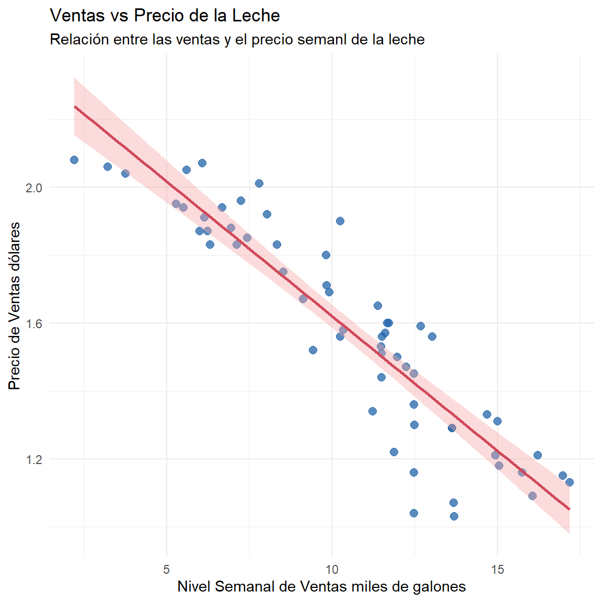
Interpretacion
El gráfico de dispersión con su respectiva línea de tendencia, muestra una clara relación inversa o negativa entre el nivel semanal de ventas de leche (en miles de galones) y el precio de venta en dólares. A medida que el precio por galón aumenta, el volumen de ventas semanales tiende a disminuir de manera constante, lo cual se alinea con la ley económica fundamental de la demanda. Asimismo, la banda de confianza que rodea la línea roja indica la consistencia de este modelo de regresión lineal para predecir el comportamiento de los datos observados
Call:
lm(formula = Ventas ~ Precio, data = Data)
Residuals:
Min 1Q Median 3Q Max
-3.6796 -0.9965 0.1874 0.8942 3.1011
Coefficients:
Estimate Std. Error t value Pr(>|t|)
(Intercept) 27.0462 1.0037 26.95 <2e-16 ***
Precio -10.4775 0.6223 -16.84 <2e-16 ***
---
Signif. codes: 0 '***' 0.001 '**' 0.01 '*' 0.05 '.' 0.1 ' ' 1
Residual standard error: 1.498 on 58 degrees of freedom
Multiple R-squared: 0.8302, Adjusted R-squared: 0.8272
F-statistic: 283.5 on 1 and 58 DF, p-value: < 2.2e-16
Interpretacion
Pendiente (Precio = -10.4775): Confirma una relación inversa (negativa); por cada dólar (1.00) que aumenta el precio por galón de leche, las ventas semanales disminuyen en promedio 10.48 miles de galones (aproximadamente 10,478 galones). Su estadístico t = -16.84 y su valor p < 2 \times 10^{-16} (***) demuestran que el efecto del precio es estadísticamente muy significativo.
Intercepto ((Intercept) = 27.0462): Representa el punto de corte teórico con el eje vertical (27.05 miles de galones cuando el precio es 0),el cual resulta estadísticamente significativo (t = 26.95, p < 2 \times 10^{-16}) como parámetro de ajuste, aunque carece de interpretación económica directa al estar fuera del rango real de precios observados.
Residuos (Residuals): Muestran una distribución equilibrada alrededor de cero (mediana de 0.1874, con primer y tercer cuartil en -0.9965 y 0.8942 respectivamente), oscilando entre un error máximo por defecto de -3.68 y por exceso de +3.10 miles de galones, lo que respalda la adecuación del ajuste lineal.
La ecuación \hat{Y} = 27.046 - 10.478X refleja una relación inversa y estadísticamente significativa entre el precio y las ventas de leche, donde la pendiente indica que por cada dólar que aumenta el precio por galón, las ventas semanales disminuyen en promedio 10.478 miles de galones, mientras que el intercepto representa un valor de referencia teórico de 27.046 miles de galones cuando el precio es cero, útil puramente para el ajuste matemático del modelo fuera del rango observado.
Gráficos de diagnóstico
Ver código
# Cuatro gráficos diagnósticos básicos de lm()par(mfrow =c(2, 2))plot(modelo)
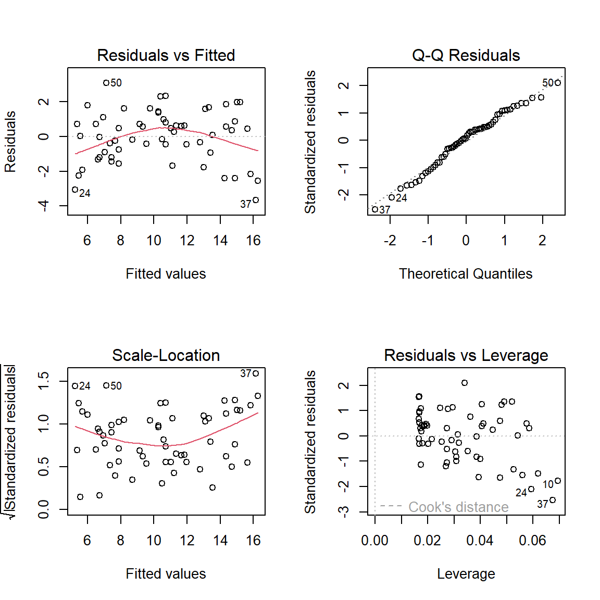
Ver código
par(mfrow =c(1, 1))
Interpretacion
Los gráficos diagnósticos de R confirman que el modelo cumple satisfactoriamente con los supuestos estadísticos clave: el gráfico Residuals vs Fitted y Scale-Location muestran una dispersión equilibrada que valida la linealidad y la homocedasticidad; el diagrama Q-Q Residuals evidencia que los errores se distribuyen de forma normal al alinearse sobre la diagonal; y el gráfico Residuals vs Leverage confirma la ausencia de observaciones con una influencia extrema o desproporcionada que afecte los coeficientes de la regresión.
Gráfico de residuos frente a valores ajustados con ggplot2
Ver código
diagnostico <-augment(modelo)ggplot(diagnostico,aes(x = .fitted, y = .resid)) +geom_point(color ="#2364AA", alpha =0.75) +geom_hline(yintercept =0, linetype ="dashed",color ="#D1495B") +geom_smooth(method ="loess", se =FALSE,color ="darkgreen") +labs(title ="Residuos frente a valores ajustados",x ="Valores ajustados",y ="Residuos" ) +theme_minimal()
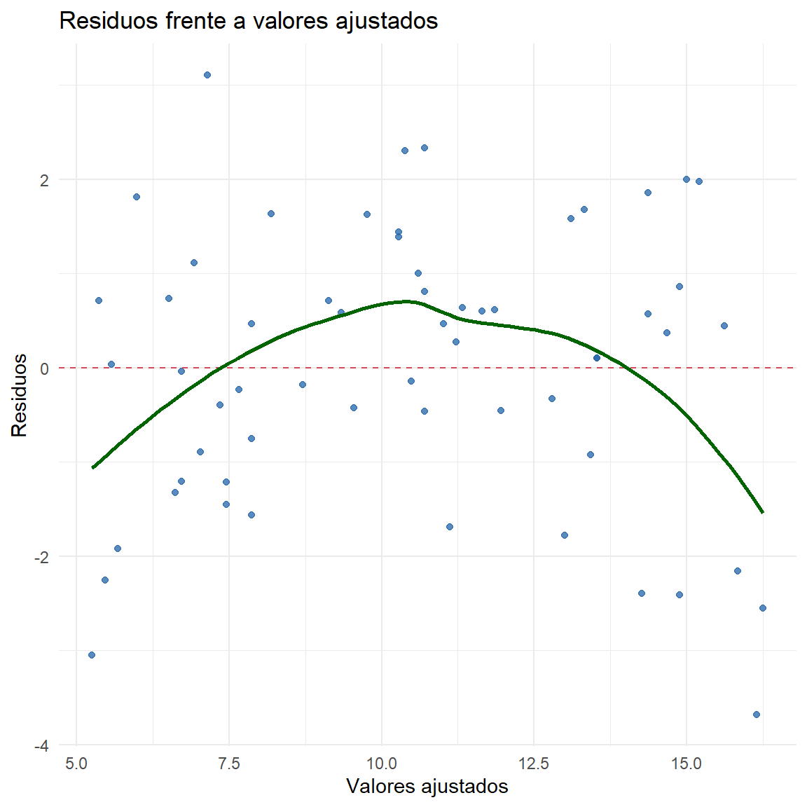
Interpretacion
El gráfico de Residuos frente a valores ajustados muestra la dispersión de los errores en función de las estimaciones del modelo. Aunque los puntos se distribuyen de manera relativamente simétrica alrededor de cero, la línea de tendencia verdoscura presenta una ligera curvatura en forma de “U” invertida, lo que sugiere que podría existir una leve falta de linealidad en la relación original entre las variables que un modelo cuadrático o polinómico podría capturar mejor, aunque globalmente los residuos mantienen una variabilidad aceptable sin patrones extremos de heterocedasticidad.
Gráfico Q-Q
Ver código
ggplot(diagnostico,aes(sample = .std.resid)) +stat_qq(color ="#2364AA") +stat_qq_line(color ="#D1495B") +labs(title ="Gráfico Q-Q de los residuos estudentizados",x ="Cuantiles teóricos",y ="Cuantiles observados" ) +theme_minimal()
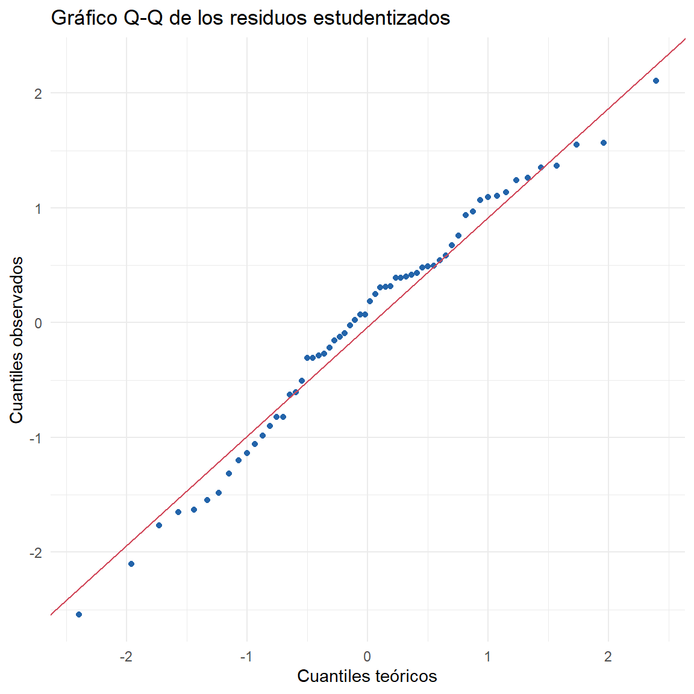
Interpretacion
El Gráfico Q-Q de los residuos estudentizados evalúa el supuesto de normalidad comparando los cuantiles observados de los errores frente a los cuantiles teóricos de una distribución normal estándar. Dado que la gran mayoría de los puntos azules se alinean de manera muy cercana y constante a lo largo de la línea diagonal roja, con apenas ligeras desviaciones en los extremos (colas), se confirma que los residuos siguen satisfactoriamente una distribución normal, respaldando la validez de las pruebas de significancia e intervalos de confianza del modelo.
Pruebas estadísticas de los supuestos en R
Ver código
shapiro.test(residuals(modelo))
Shapiro-Wilk normality test
data: residuals(modelo)
W = 0.98112, p-value = 0.4776
Interpretacion
La prueba de normalidad de Shapiro-Wilk aplicada a los residuos del modelo arrojó un valor p = 0.4776 que, al ser superior al nivel de significancia de 0.05, permite no rechazar la hipótesis nula y confirmar estadísticamente que los errores del modelo se distribuyen de forma normal, validando con ello la confiabilidad de los intervalos de confianza y las pruebas de hipótesis realizadas.
Homocedasticidad: Breusch-Pagan
Ver código
bptest(modelo)
studentized Breusch-Pagan test
data: modelo
BP = 1.4306, df = 1, p-value = 0.2317
Interpretacion
La prueba de Breusch-Pagan para homocedasticidad arrojó un valor p = 0.2317 que, al ser superior al nivel de significancia de 0.05, permite no rechazar la hipótesis nula de homocedasticidad, confirmando estadísticamente que la varianza de los residuos es constante a lo largo del modelo y que se cumple satisfactoriamente este supuesto fundamental de la regresión lineal.
Independencia: Durbin-Watson
Ver código
dwtest(modelo)
Durbin-Watson test
data: modelo
DW = 2.1787, p-value = 0.7638
alternative hypothesis: true autocorrelation is greater than 0
Interpretacion
La prueba de Durbin-Watson arrojó un estadístico DW = 2.1787 con un valor p = 0.7638 que, al ser superior al nivel de significancia de 0.05, permite no rechazar la hipótesis nula y confirmar que no existe autocorrelación serial significativa en los errores del modelo, validando así el supuesto de independencia de las observaciones.
Linealidad: componente gráfico y prueba complementaria
Ver código
car::crPlots(modelo)
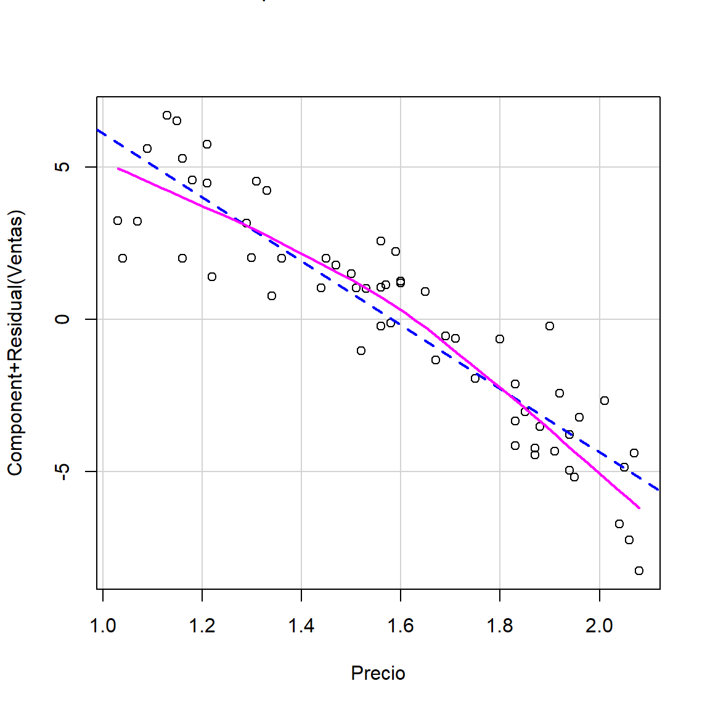
Interpretacion
El gráfico de componentes más residuos (Component + Residual Plot) permite evaluar visualmente la linealidad de la relación entre la variable dependiente y el predictor Precio. Dado que la línea suavizada de color fucsia sigue muy de cerca la tendencia de la línea recta discontinua azul, se corrobora gráficamente que la relación entre ambas variables es de naturaleza lineal, justificando el uso del modelo de regresión lineal simple sin requerir transformaciones adicionales.
También puede utilizarse una prueba de especificación como Rainbow:
La prueba de Rainbow (Rainbow test) para evaluar la linealidad arrojó un valor p = 0.6404 que, al ser superior al nivel de significancia de 0.05, permite no rechazar la hipótesis nula de linealidad, confirmando estadísticamente que la relación funcional entre las variables es adecuada y que no existe evidencia de una mala especificación del modelo lineal.
Observaciones influyentes
Ver código
# Distancia de Cookcooks <-cooks.distance(modelo)plot(cooks,type ="h",main ="Distancia de Cook",ylab ="Distancia de Cook",xlab ="Observación")abline(h =4/n, col ="red", lty =2)
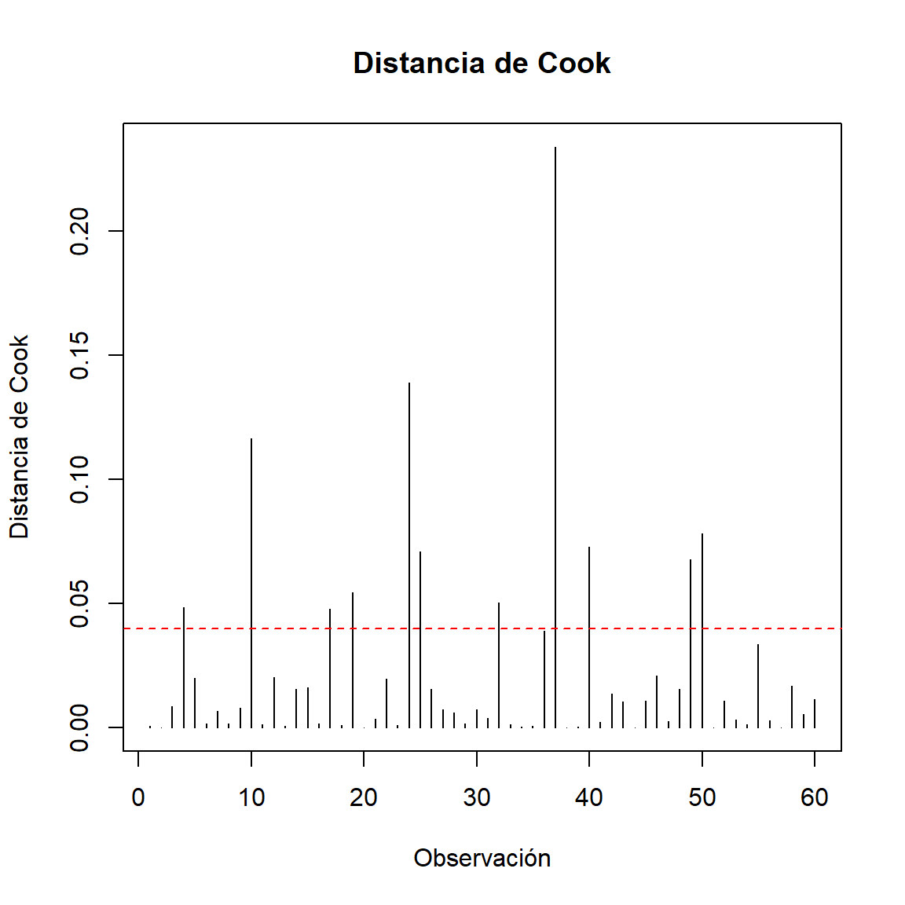
Interpretacion
El gráfico de la Distancia de Cook permite identificar observaciones individuales que podrían ejercer una influencia desproporcionada sobre los coeficientes estimados del modelo de regresión. Aunque algunas observaciones superan ligeramente el umbral preventivo de referencia indicado por la línea discontinua roja (\approx 0.04), destacando principalmente las observaciones 10, 24 y 37, todos los valores se mantienen muy por debajo del criterio crítico estándar (D_i > 0.5 o D_i > 1), lo que confirma que no existen puntos altamente influyentes que distorsionen la estabilidad o validez del modelo.
Errores estándar robustos a heterocedasticidad
Ver código
# Instalar si es necesario:# install.packages("sandwich")library(sandwich)library(lmtest)coeftest(modelo,vcov. =vcovHC(modelo, type ="HC1"))
t test of coefficients:
Estimate Std. Error t value Pr(>|t|)
(Intercept) 27.0462 1.2629 21.417 < 2.2e-16 ***
Precio -10.4775 0.7696 -13.614 < 2.2e-16 ***
---
Signif. codes: 0 '***' 0.001 '**' 0.01 '*' 0.05 '.' 0.1 ' ' 1
Interpretacion
La prueba t sobre los coeficientes del modelo demuestra que tanto el intercepto (\beta_0 = 27.0462, t = 21.417) como la pendiente asociada a la variable Precio (\beta_1 = -10.4775, t = -13.614) son altamente significativos desde el punto de vista estadístico, al presentar valores p < 2.2 \times 10^{-16} (inferiores al nivel de significancia \alpha = 0.001). Esto confirma que el precio ejerce un efecto lineal inverso y estadísticamente robusto sobre las ventas, aportando evidencia sólida para rechazar la hipótesis nula de que su coeficiente sea igual a cero.
Predicción e intervalos
Ver código
nuevos_municipios <-tibble(Precio =c(8, 12, 16))# Intervalos de confianza para la mediapredict(modelo, nuevos_municipios,interval ="confidence",level =0.95)
Las dos salidas corresponden a las estimaciones puntuales (fit) junto con sus respectivos intervalos de confianza (tabla superior, más estrechos) e intervalos de predicción (tabla inferior, ligeramente más amplios al incorporar la variabilidad individual del error) para tres escenarios de precios futuros (X = 8, 12 y 16, deducibles de la ecuación \hat{Y} = 27.0462 - 10.4775X). Dado que dichos precios se encuentran muy por encima del rango observado en la muestra original (aproximadamente entre \$1.00 y \$2.10), el modelo incurre en una extrapolación severa que arroja proyecciones de ventas negativas (-56.77, -98.68 y -140.59 miles de galones), lo cual carece de sentido físico o comercial y demuestra que la ecuación lineal solo es válida dentro del dominio de precios observado en los datos.
Preguntas de reflexión
¿cómo afecta a la interpretación práctica que el intercepto o las predicciones fuera de rango arrojen valores sin sentido real (como ventas negativas)?
¿Por qué es fundamental delimitar el rango de valores de la variable predictora (Precio) al comunicar los resultados a quienes toman decisiones, y qué precauciones deben tomarse al proyectar escenarios futuros?
¿Qué ocurre cuando un gráfico diagnóstico sugiere una ligera curvatura o un punto atípico, mientras que las pruebas formales (como Shapiro-Wilk, Breusch-Pagan o Rainbow) no encuentran evidencia estadística en contra de los supuestos?
Aunque la distancia de Cook indique que ninguna observación distorsiona gravemente el modelo, ¿qué podría explicar el comportamiento de los casos con mayor residuo o influencia en el contexto real del negocio o fenómeno estudiado?
El hecho de que la pendiente tenga un valor p extremadamente pequeño confirma que el efecto no es producto del azar, pero ¿cómo evaluar si la magnitud del cambio en las ventas es realmente determinante frente a otros factores no incluidos en el modelo?
Al incluir únicamente el precio como variable explicativa, ¿qué variables adicionales o factores externos podrían estar explicando la variabilidad restante en las ventas y cómo enriquecerían un análisis posterior?
Conclusiones
Validez estadística y alcance de predicción: El modelo de regresión lineal simple (Ventas ~ Precio) es estadísticamente sólido dentro del rango de precios observado y cumple con los supuestos fundamentales de normalidad, homocedasticidad, independencia y linealidad, pero pierde validez práctica al extrapolar a precios muy altos donde genera estimaciones sin sentido comercial.
Relación inversa significativa sin puntos críticos: El precio ejerce un efecto negativo y altamente significativo sobre las ventas, y la ausencia de autocorrelación junto con valores moderados en la distancia de Cook respaldan la estabilidad de los parámetros estimados en la muestra analizada.
Referencias bibliográficas
Regresión lineal y diagnóstico de modelos: Gujarati, D. N., & Porter, D. C. (2010). Econometría (5.ª ed.). McGraw-Hill.
Análisis estadístico aplicado y modelos lineales: Montgomery, D. C., Peck, E. A., & Vining, G. G. (2012). Introduction to linear regression analysis (5.ª ed.). John Wiley & Sons.
Pruebas de supuestos y diagnóstico en R: Fox, J., & Weisberg, S. (2019). An R companion to applied regression (3.ª ed.). Sage Publications.
Norma técnica colombiana para trabajos escritos: Instituto Colombiano de Normas Técnicas y Certificación [ICONTEC]. (2018). Documentación. Presentación de tesis, trabajos de grado y otros trabajos de investigación (NTC 1486). ICONTEC.